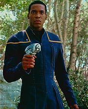
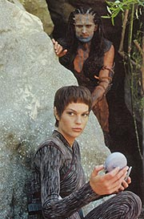
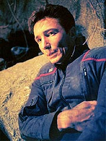
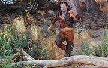
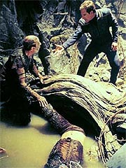
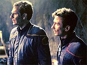
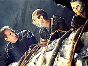
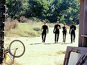

Episdio
anterior | Prximo
episdio
Sinopse:
A Enterprise est a caminho de Terra
Nova, uma colnia terrestre que foi estabelecida pela Terra h 75
anos. Trata-se um dos maiores mistrios da histria da
explorao espacial humana: cincos anos aps se estabelecerem, os
colonos foram informados de que uma nova nave levaria mais 200
pessoas para l, vindas da Terra. Eles recusaram e, aps algumas
discusses por rdio, nunca mais se ouviu falar deles.

Como na poca uma
nave levava nove anos para ir at Terra Nova e outros nove para
voltar (a distncia de aproximadamente 20 anos-luz), a agncia
espacial terrestre no mandou ningum para verificar o que havia
acontecido --at agora. Como a Enterprise capaz de fazer o
percurso em muito menos tempo, ela agora se aproxima do planeta, na
esperana de finalmente resolver o mistrio, que intriga no s
historiadores, como tambm entusiastas da explorao espacial,
como o alferes Travis Mayweather.
Ao chegar a Terra Nova, os sensores da Enterprise mostram que a
colnia est abandonada, e a superfcie do planeta apresenta
nveis de radiao letais se a exposio for longa. Entretanto,
para algumas horas, no h perigo, o que faz Archer decidir por
descer ao planeta junto com alguns de seus oficiais. No shuttlepod o
acompanham o oficial de armamentos Reed, o piloto Mayweather e a
primeiro-oficial T'Pol. Tucker fica no comando da nave.
Durante a expedio, Reed detecta um sinal de vida --o que
aparentemente um aliengena humanide. Ele o persegue at a
entrada de uma caverna. L ele se rene aos outros trs oficiais.
Archer e Reed resolvem ir adiante, enquanto T'Pol e Mayweather
guardam a entrada.

No
interior da caverna, eles encontram vrios humanides, mas eles
reagem hostilmente, disparando contra a dupla. Durante a fuga, Reed
atingido e fica para trs. Enquanto isso, Mayweather atacado
na entrada da caverna, mas seu oponente rendido inconsciente por
um tiro de pistola de fase dado por T'Pol. A oficial de cincias
faz leituras do humanide, enquanto Archer corre para fora da
caverna, ordenando que os trs se encaminhem para o shuttlepod para
voltar Enterprise. No caminho de volta, enquanto ainda amargura o
fato de Reed ter sido deixado para trs, Archer informado por
T'Pol de que os humanides na verdade so humanos.
A nica concluso possvel a de que aqueles humanos so
descendentes dos antigos habitantes de Terra Nova. Ao saber disso,
Archer decide voltar e tentar novamente estabelecer contato
pacfico, apesar da agressividade deles. Graas a isso, ele
descobre que os Novans, como eles se denominam, so de fato
descendentes dos primeiros colonos. Setenta anos atrs, o
hemisfrio norte do planeta foi atingido pelo choque de um cometa,
que trouxe consigo diversos materiais nocivos e radioativos --num
evento que os Novans se referem como a "chuva de veneno".
Graas ao contato agressivo que estava sendo mantido entre a Terra
e a colnia na poca do impacto, os Novans acreditaram que a
catstrofe era um ataque direto feito por humanos, que pretendiam
tomar a colnia para obrigar a aceitao da nova onda de colonos.
Aps o impacto, apenas as crianas com at 5 anos de idade
conseguiram sobreviver, graas capacidade de desenvolver
resistncia radiao.
Archer tenta convenc-los do que de fato aconteceu, e da inocncia
da Terra no episdio, mas os Novans esto cticos. Phlox, que
desceu com ele para verificar o estado de Reed, diagnostica cncer
de pulmo em uma das mais idosas habitantes da colnia, Nadet. Ele
se oferece para lev-la de volta Enterprise, onde a doena
ser facilmente curada. Ela e seu filho, Jamin, decidem aceitar a
proposta, contanto que Reed fique com os outros 56 colonos, na
condio de refm.

Archer aceita os
termos e os leva de volta Enterprise, na esperana de
convenc-los de suas boas intenes. Ao chegar l, Phlox no
tem dificuldades para curar Nadet, mas ele descobre que ela tambm
est sofrendo de um srio envenenamento radioativo. Apesar de
protegidos da radiao da superfcie no interior das cavernas, os
Novans esto agora sofrendo pela contaminao de seus lenis
freticos --a gua potvel est irremediavelmente contaminada. O
mdico informa a Archer que o nico modo de salv-los
lev-los daquele planeta.
O capito tenta explicar a situao a Nadet e seu filho, dessa
vez apelando para um lado emocional. Ele encontra nos bancos de
dados da nave uma antiga foto de Terra Nova, tirada pelos primeiros
colonos. L, Nadet aparece como uma criana de apenas 5 anos,
Bernardette, filha de uma mulher chamada Vera Culler.
Embora se reconhea na foto, Nadet e seu filho ainda esto muito
desconfiados e se recusam a abandonar o local. Enquanto se v tendo
de decidir se realoca fora os colonos ou se os deixa morrer,
Archer informado por Tucker de que apenas o hemisfrio norte do
planeta foi afetado pelo impacto do cometa --o que abre a porta para
que os colonos sejam realocados no para outro planeta, mas apenas
para o hemisfrio sul.
Archer mais uma vez tenta convencer os dois, mas eles continuam
relutantes. Eles pedem que sejam levados de volta imediatamente, sob
a pena de Reed ser executado. Desconcertado, Archer concorda. Ao
descer, entretanto, o shuttlepod pousa em um lugar pouco firme e
acaba sofrendo um acidente, caindo vrios metros por uma galeria
subterrnea. O tremor causado pela queda do pod fez com que um
Novan ficasse preso sob uma rvore, enquanto o nvel da gua sob
ele subia cada vez mais. Com a perna quebrada, ele era incapaz de
escapar, e estava prestes a se afogar.

Enquanto
Archer, Nadet e seu filho caminhavam pelos tneis para ir ao
encontro de Reed e os outros Novans, eles ouviram os pedidos de
socorro do ferido. Para salv-lo, Archer e Jamin precisam trabalhar
juntos, o que refora o elo de confiana entre os dois. Aps o
sucesso no salvamento, todos se encaminham para onde est Reed,
onde Nadet convence a todos de que a realocao a nica
soluo para a sobrevivncia de seu povo.
A Enterprise ajuda nos procedimentos, permitindo assim que a
civilizao Novan possa agora seguir seu curso, no hemisfrio sul
do planeta. Travis Mayweather o mais animado sobre o fato de eles
terem solucionado um mistrio de 70 anos. Por isso, Archer pede que
ele escreva o relatrio para a Frota Estelar, enquanto a Enterprise
se encaminha para sua prxima misso.
Comentrios:
"Terra Nova" o primeiro episdio,
alm de "Broken Bow", a
ter uma histria um pouco mais sofisticada do que um simples "high-concept".
bem verdade que esse estilo est l --uma histria nica,
simples, clara, no estilo "e se...?"--, mas os
desdobramentos vo um pouco mais alm, tornando o enredo um pouco
mais intricado e interessante que o dos ltimos dois episdios.
Entretanto, infelizmente o recheio demasiado composto por
clichs para tornar este episdio um verdadeiro vencedor. A
premissa interessante, e preenche mais uma lacuna histria da
explorao inicial do espao por seres humanos, mas no oferece
grande material para a audincia ou para a tripulao da
Enterprise.

Dessa vez, o maior
beneficiado, em termos de roteiro, Archer. Finalmente o capito
retratado com um pouco mais de seriedade, e podemos acompanhar
seu estilo gil e impulsivo de comando, mas ainda assim sem ser
precipitado ou fazer bobagens que qualquer astronauta em treino na
Nasa no cometeria. Finalmente Archer volta a preencher bem a
lacuna do capito humanista da nave.
Alguns momentos so especiais para ver a dureza que comandar uma
nave estelar --uma delas quando ele perde o tenente Reed. Embora
ele diga muito pouco, podemos ver sua insatisfao contida,
graas a uma boa atuao de Scott Bakula. O segundo momento, esse
mais bem interpretado ainda, quando, numa exploso de raiva,
Archer admite sua frustrao de ter sido incapaz de fazer contato
pacfico com meros seres humanos --mesmo que eles estivessem
naquelas circunstncias pouco ortodoxas.

T'Pol
perdeu, ao menos nesse episdio, o exagero na ironia, o que fez bem
ao personagem. O que tambm possvel perceber que ela e
Archer comeam a trabalhar como uma dupla, e no simplesmente como
dois opositores, sempre contrariando um ao outro. Interessante
observar como essa transformao do relacionamento dos dois est
sendo sutil --muito mais adequada do que a sbita transformao
dos Maquis em cordeirinhos em Voyager. Mais uma vez, ponto
para a continuidade e para a produo de Enterprise.
Dos outros personagens, Reed o que mais se beneficia. Apesar da
apario pequena, seus maneirismos e seu estilo continuam a ter
presena marcante na srie. Em compensao, Mayweather continua
de mal a pior --apesar da aparente tentativa dos roteiristas de
faz-lo mais interessante nesse segmento. O meio para isso,
entretanto, totalmente artificial: no adianta simplesmente
dizer que o piloto fissurado em mistrios espaciais como o de
Terra Nova; preciso fazer com que ele se envolva com a histria.
No basta coloc-lo no grupo de descida e deix-lo vigiando a
caverna e depois vigiando o shuttlepod. Seria muito mais
interessante, por exemplo, se ele batesse de frente com Archer,
usando de sua perspectiva nica de viajante espacial experiente, na
hora de o capito decidir qual deveria ser a ao junto aos
Novans. Faltou um pouco mais de audcia, ao personagem e aos
produtores.
Sato praticamente no teve importncia, assim como Tucker, que
finalmente pagou pela exposio macia que teve nos episdios
anteriores. Phlox, embora tenha aparecido razoavelmente, no fez
nada que pudesse marc-lo no episdio.

Finalmente, ao
enredo. A histria um misto de algumas coisas que j vimos em Jornada,
mas com uma roupagem levemente diferente. H uma noo muito
parecida com a apresentada no episdio clssico "Miri"
("crianas sobreviventes"). Inclusive, ouso pensar que o
paralelismo no totalmente no-intencional. Veja as primeiras
cenas do grupo de descida em Terra Nova: Reed passa por uma roda de
bicicleta e a gira com o dedo, observando a rodar. A cena (incluindo
o ngulo e a expresso de Keating) muito parecida com uma outra
vista em "Miri",
onde o doutor McCoy gira uma roda de triciclo, momentos antes de
ser atacado por uma das "crianas".
Entretanto, a semelhana com "Miri"
acaba a. Na verdade, a premissa toda muito mais parecida com a
de "Friendship One", episdio da stima temporada
de Voyager --o que muito mais grave (se preciso copiar,
melhor que seja um produto de 35 anos do que um de menos de um ano).
At o desenrolar da histria e a concluso so muito
semelhantes. Em ambos, os terrestres so odiados por terem
supostamente destrudo culturas em outros planetas; s que em "Friendship
One" eles eram "culpados"; em "Terra
Nova", no.
Os clichs da resoluo da premissa so to convenientes e
entediantes que acabam reduzindo em muito o potencial da histria
como um todo. O relacionamento de "confiana forada"
estabelecido entre Archer e Jamin para salvar o Novan preso debaixo
da rvore mais velho que a televiso; tambm igualmente
conveniente que apenas o hemisfrio norte tenha sido afetado pelo
cometa, facilitando a realocao (e por consequncia o
convencimento) dos Novans.
esse tipo de soluo forada que prejudica o episdio. Ele
poderia ter sido muito mais desafiador, sombrio e interessante se
Archer acabasse sendo obrigado a abandonar os colonos para a morte
certa, para respeitar sua cultura e seu livre arbtrio. Entretanto,
Enterprise no est sendo conduzida para um lado "dark"
e polmico; aparentemente, tudo precisa acabar bem no fim de cada
episdio. Essa atitude leva inevitavelmente a foradas de barra
ocasionais como esta.

Do ponto
de vista tcnico, o episdio continua mantendo o alto nvel do
restante da srie. Apesar de no termos um disbunde de efeitos
especiais, como nos segmentos anteriores, "Terra Nova"
compensa com toques interessantes, como os "tatus" do
planeta, que fornecem alimento, ferramentas e vestimentas para os
Novans, e a maquiagem, brilhante como de costume, apesar de mais
simples do que anteriormente. Mas o maior destaque tcnico vai para
a trilha musical do episdio, que est acima da mdia --incluindo
a cano tocada pelos Novans na caverna, que traz sonoridade e
sentimento semelhantes melodia de Picard em "The Inner
Light". msica para colocar em CD, sem dvida.
Citaes:
Tucker - "Really?
Every school kid on Earth has learned about the famous Vulcan
expeditions..."
("Srio? Toda criana na Terra aprendeu na escola sobre as
famosas expedies Vulcanas...")
T'Pol - "Name one."
("Mencione uma.")
Tucker - "... er, History was never my best subject."
("... er, Histria nunca foi minha matria favorita.")
Archer - "If I can't make first contact with other humans...
then I have any business being out here."
("Se no consigo fazer primeiro contato com outros humanos...
ento no tenho nada a fazer aqui fora.")
Trivia:
 Erick Avari j apareceu antes em Jornada, como o Klingon B'Ijik,
de "Unification,
Part I" (A Nova Gerao), e como o vedek Yarka,
de "Destiny" (Deep Space Nine).
Erick Avari j apareceu antes em Jornada, como o Klingon B'Ijik,
de "Unification,
Part I" (A Nova Gerao), e como o vedek Yarka,
de "Destiny" (Deep Space Nine).
Esse o primeiro episdio de Enterprise dirigido por um
ex-ator de Jornada, LeVar Burton (Geordi La Forge). Burton
j dirigiu para as sries modernas do franchise, e considerado
um dos mais talentosos diretores sados do elenco de A Nova
Gerao, junto de Jonathan Frakes.
Esse tambm o primeiro episdio da srie a no mostrar
Porthos, o cozinho beagle do capito Archer.
Ficha
tcnica:
Escrito por Rick Berman &
Brannon Braga
Direo de LeVar Burton
Exibido em 24/10/2001
Produo: 006
Elenco:
Scott
Bakula como Jonathan Archer
Jolene Blalock como
T'Pol
John Billingsley
como Phlox
Anthony Montgomery
como Travis Mayweather
Connor Trinneer como
Charlie 'Trip' Tucker III
Dominic Keating como
Malcolm Reed
Linda Park como Hoshi Sato
Elenco convidado:
Erick Avari como Jamin
Mary Carver como Nadet
Brian Jacobs como Athan
Greville Henwood como Akary